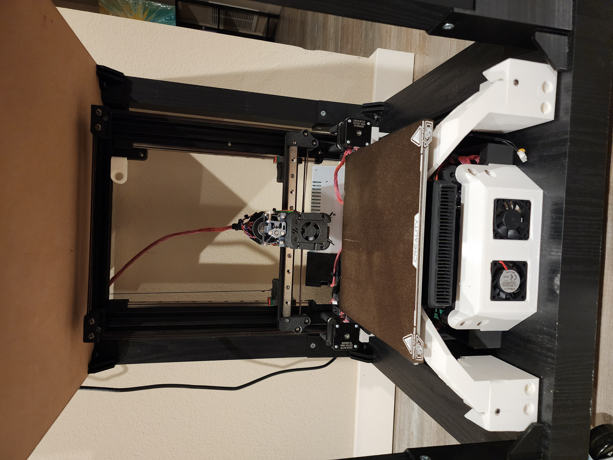
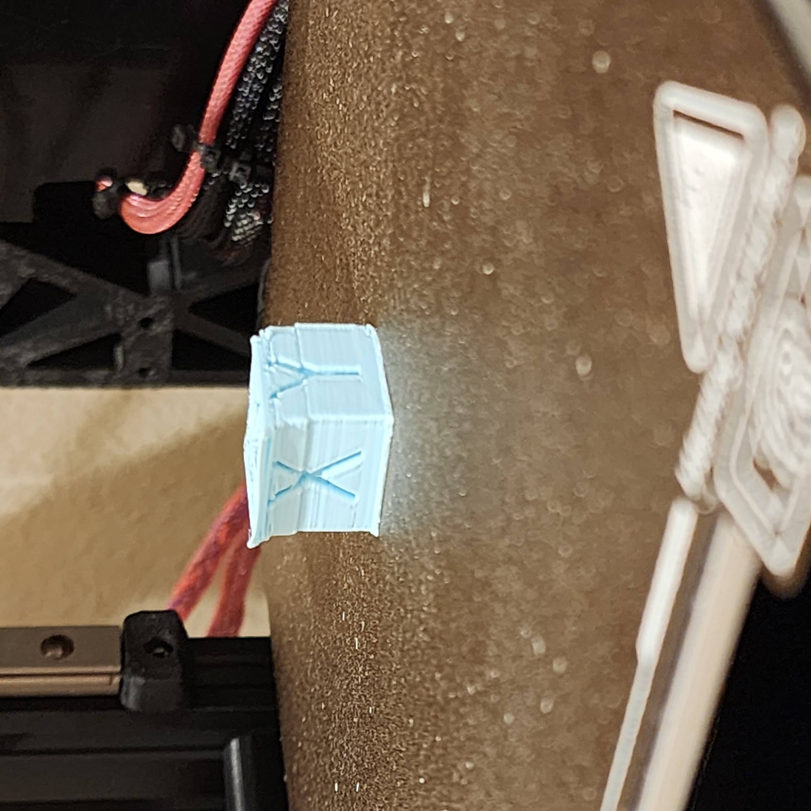
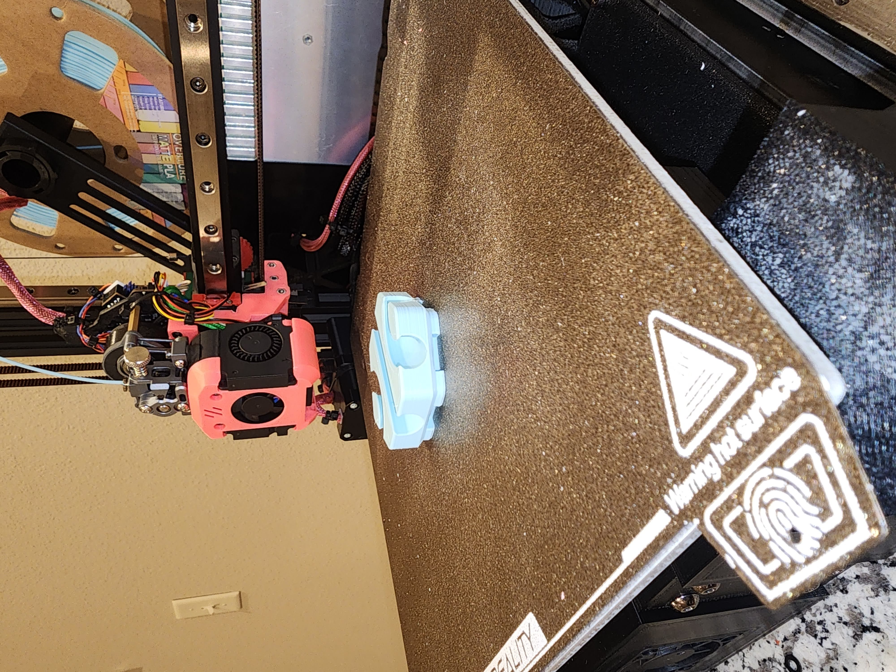

I built a custom 3D printer based on an Ender 3 and the Switchwire concept, aiming to make it modular, compact, and buildable by others using small-format printers.
The project gave me hands-on experience with firmware tuning, motion system calibration, and designing around real-world manufacturing limits.
Before designing this printer, I built a switchwire 3D printer with an ender 3 as the chassis. While building I saw the video from ProperPrinting about his moving portal printer. I generally enjoy ideas that are anti-meta when it comes to designs and so I thought it would be fun to mix the two ideas.
I purchased another switchwire conversion kit from Siboor to get all the mechanical parts. Parts were designed and printed out of PLA to make an initial iteration of the design. The switchwire gantry is used with a completely custom base. The electronics are placed towards the bottom front of the printer with fans for cooling. Above the electronics and below the bed would be a nevermore carbon filter for enclosed printing.
The printer was undergoing a few problems.
The prints were struggling to stick onto the bed. Since the bed was stationary to the printer, the tap sensor was selected for the bed leveling sensor. The sensor needed a custom mount to attach it to the switchwire gantry. However, this made homing easier and much more consistent.
Next, the printer's y-axis was having some layershift. This could have been due to friction on the y-axis rails or due to weak motors. The rails were cleaned and lubricated multiple times with no luck. The rails and carriages were replaced with other rails of the same size with two carriages on each. This helped stabilize the gantry and made movements smoother on the stepper motors. The motors were replaced with beefier motors which fixed the overheating and skipped steps.
